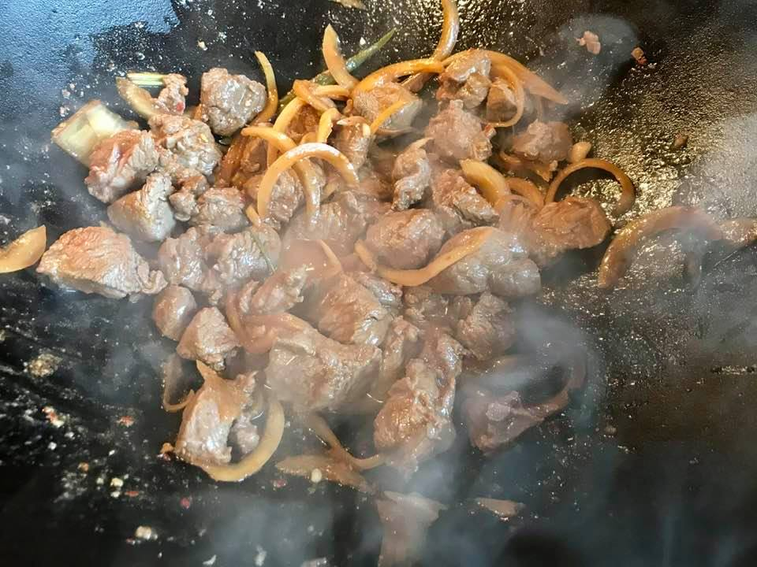

Beef Stir Fry
- Serves: 1
- Prep time: 10 mins
- Cook time: 10 mins
Ingredients
- 3 oz sliced beef, chicken, pork, fish, or a combination
- Handfull of mushrooms
- 1 tbsp fish sauce
- 1 tbsp vinegar
- 2 tbsp dry white or sherry wine
- 1 tbsp fresh grated ginger
- 1 tbsp Szechuan peppercorns
- 1 tbsp of cooking oil of choice
- Drizzle toasted sesame oil
- *Optional: thinly sliced onion
Instructions
Special notes:
There is plenty of salt in the ingredients utilized in the sauce so no additional salt is included here. As always, you can add salt to taste once your dish is complete, but I would recommend not adding any salt until fully cooked. As the sauce cooks and thickens, the salt content of the fish sauce will intensify and additional salt can lead to an overly salty tasting finished product.
Stir fry is a quick cook so getting all your prep done before you heat up your wok (or pan) is essential.
Leaner cuts such as sirloin work best for stir fry. Fattier cuts are great, in general, but with stir fry the fat is not exposed to heat long enough to render down very much, which can leave an undesirable texture.
- Crush Szechuan peppers in a mortar and pestle. If you don't have a mortar and pestle, you can do this by placing the peppers into a small plastic bag and rolling with a rolling pin, tin can, or other round item.
- Combine ingredients 3-7 and whisk to combine.
- Refrigerating your sauce will help to marry the flavors. This step is not essential but it is helpful. Skip it if you're in a hurry.
- Slice your meat(s) of choice and set aside.
- slice mushrooms and set aside.
- Slice onion, if using. Set aside.
- Add your cooking oil of choice to a wok (or pan). You can use rendered bacon fat, butter, or avocado oil.
- Heat your wok (or pan) to a high to medium/high heat.
- Once your wok (or pan) is heated, add your sliced meat and stir.
- Add sliced onion, if using, and mushroom and stir.
- Add prepared sauce and heat until almost boiling.
- Stir well and continue stirring until meat has reached desired doneness.
- Plate your stir fry and drizzle with toasted sesame oil.
Substitutions/Additions
- If you do not have or cannot find Szechuan peppers they can be omitted.
- A variety of vegetables can be added to stir fry. Sliced peppers, zucchini, carrot, broccoli, and cauliflower are all great choices. They can be added along with the onion and mushrooms in step 10.